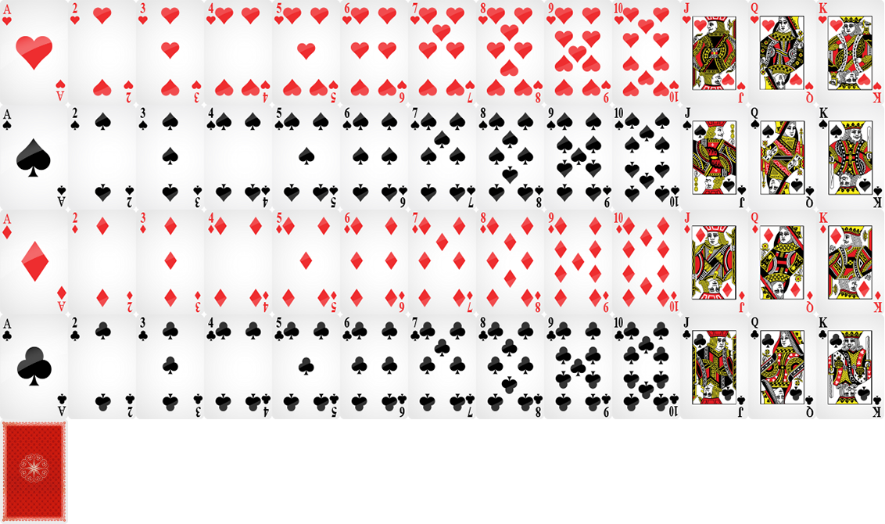

“Klondike Solitaire” Documentation by “Code This Lab S.r.l.” v1.0
“Klondike Solitaire”
Created: 24/02/2015
By: Code This Lab S.r.l.
Email: info@codethislab.com
Thank you for purchasing our game. If you have any questions that are beyond the scope of this help file, please feel free to email via user page contact form here. Thanks so much!
Table of Contents
- Description
- Folder Contents
- Getting Started
- HTML Structure
- CSS Files and Structure
- JavaScript
- Game functions
- Change Card Set
- Disable Sounds
- Wordpress Plugin
A) Description - top
Klondike Solitaire is a HTML5 Game. Enjoy this stylish version of the classic Klondike Solitaire!
The ZIP package contains the game with 1600x768 resolution that scales to fit the whole screen device
The game is fully compatible with all most common mobile devices.
Sounds are enabled for mobile but we can't grant full audio compatibility on all mobile devices due to some well-know issue between some mobile-browser and HTML5.
So if you want to avoid sound loading, please read Disable Sound section).
WARNING: Sounds can't be enabled for Windows Phone as this kind of device have unsolved issues with 'audio' and 'video' tag.
B) Folder Contents - top
The item package contains the following folders:
- ctl_arcade_wp_plugin:
This folder contains the game version (zip file inside) that can be used with wordpress plugin CTL Arcade - game:
This folder contains the full source code that you can edit as you need. - live_demo:
This folder contains the obfuscated version of the game. WARNING: you should use this version if you don't have to edit the original game. - readme:
This folder contains the readme of the game.
C)Getting Started - top
To install the game just upload on your server the game folder game1136x640.
- Game Embedding: The proper way to embed the game is in a full-screen web page or in an iframe.
In the first case the game will fit the screen size, in the second, that of the iframe.
If the iframe size matches that of the screen, the game will fit accordingly.
The alignment will be proportioned to the aspect ratio of the game.
To install the game in a WordPress website, we suggest to use our plugin CTL Arcade .
- Save Score: if you need to call your php function for saving score, you can add it in the index.html file:
$(document).ready(function(){ var oMain = new CMain(); $(oMain).on("save_score", function(evt,iScore) { //alert("iScore: "+iScore); }); }); - Localization: You can easily change game text for different languages, changing string in CLang.js
var TEXT_PRELOADER_CONTINUE = "START";
var TEXT_GAMEOVER = "YOU WIN";
var TEXT_SCORE = "SCORE";
var TEXT_TIME = "TIME";
var TEXT_HELP1 = "THE CARD PILES IN BOARD, CAN BE BUILD DOWN BY DECRESCENT CARD RANK WITH ALTERNATE COLORS";
var TEXT_HELP2 = "THE GOAL IS TO BUILD UP FOUR FOUNDATION BY SUIT, FROM ACE TO KING ";
var TEXT_HELP1_PAGE2 = "SCORE SYSTEM";
var TEXT_HELP2_PAGE2 = "YOU CAN EARN POINT BY DIFFERENT ACTION:";
var TEXT_WIN_PAGE2 = " Points for any card you drop on Foundation for the first time";
var TEXT_WIN2_PAGE2 = " Points for any card you snap on Board for the first time"
var TEXT_LOSE1_PAGE2 = "Time is your enemy! You lose ";
var TEXT_LOSE2_PAGE2 = " Points every ";
var TEXT_LOSE3_PAGE2 = " seconds";
var TEXT_MODE_1 = "1 card showing";
var TEXT_MODE_3 = "3 cards showing";
var TEXT_EASY = "EASY";
var TEXT_NORMAL = "NORMAL";
var TEXT_TOP_MODE = "CHOSE GAME MODE";
var TEXT_SHARE_IMAGE = "200x200.jpg";
var TEXT_SHARE_TITLE = "Congratulations!";
var TEXT_SHARE_MSG1 = "You collected ";
var TEXT_SHARE_MSG2 = " points!
Share your score with your friends!";
var TEXT_SHARE_SHARE1 = "My score is ";
var TEXT_SHARE_SHARE2 = " points! Can you do better";
var oMain = new CMain({
timer_losepoint:30000, //Timer (in ms) of losing points
points_to_lose: -8, //Number of losing points
points_to_suit:15, //Points win by snap a card on suit
points_to_board:5, //Points win by snap a card on board
/////////////GENERAL SETTINGS
audio_enable_on_startup:false, //ENABLE/DISABLE AUDIO WHEN GAME STARTS
fullscreen:true, //SET THIS TO FALSE IF YOU DON'T WANT TO SHOW FULLSCREEN BUTTON
check_orientation:true //SET TO FALSE IF YOU DON'T WANT TO SHOW ORIENTATION ALERT ON MOBILE DEVICES
});
D)HTML Structure - top
This game have the canvas tag in the body. The ready event into the body calls the main function of the game: CMain().
The head section declares all the javascript functions of the game. The whole project uses a typical object-oriented approach.
In the init function there are 8 mapped events that can be useful eventually for stats
E) CSS Files and Structure - top
The game use two CSS files. The first one is a generic reset file. Many browser interpret the default behavior of html elements differently. By using a general reset CSS file, we can work round this. Keep in mind, that these values might be overridden somewhere else in the file.
The second file contains all of the specific stylings for the canvas and some hack to be fully compatible with all most popular mobile devices
F) JavaScript - top
This game contains:
- jQuery
- Our custom scripts
- CreateJs plugin
- Howler Sound library
- Screenfull library
- Platform library
- jQuery is a Javascript library that greatly reduces the amount of code that you must write.
- The game have the following js files:
- CMain: the main class called by the index file.
This file controls the sprite_lib.js file that manages the sprite loading, the loop game and initialize the canvas with the CreateJs library - ctl_utils: this file manages the canvas resize and its centering
- screenfull: this is a library that manages fullscreen utility
- screenfull: this is a library that manages audio utility
- sprite_lib: this class loads all images declared in the main class
- settings: general game settings
- CLang: global string variables for language localization
- CPreloader: simple text preloader to show resources loading progress
- CMenu: simple menu with the play button
- CCreditsPanel: this panel shows credits of the game
- CGfxButton: this class create a standard button
- CToggle: this class create a standard toggle button
- CTextButton: this class create a standard text button
- CGame: this class manages the game logic
- CInterface: this class controls game GUI that contains text and buttons
- CEndPanel: the final game over panel
- CHelpPanel: the help panel that is shown before game starting
- CCard: this class manages the card object
- CModeMenu: this class manages the panel where the user can choose the easy or hard mode
- CScore: this class manages the score text that appears when the player gain or lose some points
- CAreYouSurePanel: this class ensure the confirm to exit from game
- ios_fullscreen: this class manages fullscreen on iOS
- CMain: the main class called by the index file.
- CreateJs is a suite of modular libraries and tools which work together to enable rich interactive content on open web technologies via HTML5.
- Howler is a javascript Audio library.
- Screenfull is a javascript library that manages the fullscreen.
- Platform is a javascript library that manages the browser and device info
Resuming, the complete game flow is the following:
- The index.html file calls the CMain.js file after ready event is called
- The main class calls CPreloader.js to init preloader text and start sprite loading
- When all sprites contained in "/sprites" and "/sounds" folder are loaded, the main class removes the preloader and calls the CMenu.js file that shows the main menu
- If the user click the Play button in main menu, the CModeMenu.js class is called and the player can choose between Easy and Hard mode
- When the user choose in Mode Panel, the CGame.js class is called and the game starts
- The User play the game
- If the player stackes all card suits, the game calls the Win Panel
- If the user click on the exit button in the up-right corner, the game returns to the menu screen
G) Game functions - top
In this section will be explained all the most important functions used in CGame.js file.- _init()
This function attach on the canvas some game sprites like background (oBg), GUI and initialize the touch events.. - _shuffleCard()
This function simply shuffles tha cerd deck. - _setBoard()
This function init the starting card displacement and card deck. - pickCard()
This function is called when the player click a card to move. - dragCard
This function manages the card dragging for Desktop. - onTouchMove
This function manages the card dragging for mobile(IOS and Android). - onTouchMoveMS
This function manages the card dragging for Windows Phone mobile. - releaseCard()
This function is called when the card is released. - _snapOnSuit
This function checks if card has been released within a Suit foundation. - _snapOnBoardKing
This function check if the King Card can be placed in an empty space in the board. - _checkCardCollision
This function checks if a dragged card can be placed under a card pile. - _checkBoard
This function refresh logic matrix for the board and if one or more cards must be flipped. - _turnCard
This function manages the logic about card deck in Easy Mode. - _turn3Card
This function manages the logic about card deck in Hard Mode. - _update
This function manages the main game loop.
H) Change Card Set - top
The game contains the card spritesheets that you can edit if you want to change card images.
Currently each card has following dimensions: 87x134. So if you change card size, be sure to change also card setting in settings.js file.
- cards.png: If you want to change card graphic please respect symbols and value disposition.

I) Disable Sounds - top
If you want to disable all the sounds for mobile devices, you have to change the following value in settings.js file:
var DISABLE_SOUND_MOBILE = true;
J) Wordpress Plugin - top
CTL Arcade will allow you to add a real arcade on your worpress website, in this way your users will be more involved and will stay connected longer.
It's possible to add Ads banner at the beginning of each game and at the end of each level. This will give you a new tool to increase your revenues.
Your own users will promote your website sharing their scores on the main Social Networks, with no extra costs for you.
You'll get by default the score-sharing on Twitter. To add Facebook just follow the guideline below.
3 widgets can be added in your pages through a shortcode.
- Game iframe
- Rate the Game
- Leaderboard
- PHP 4.3
- WordPress 4.3.1
- HTML5
- Canvas
- Javascript / jQuery
You can find it here!

Once again, thank you so much for purchasing this game. Fell free to contact us if you have any questions or issue relating to this game. No guarantees, but we'll do our best to assist.